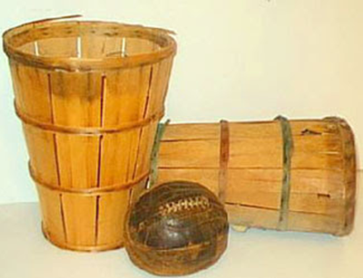
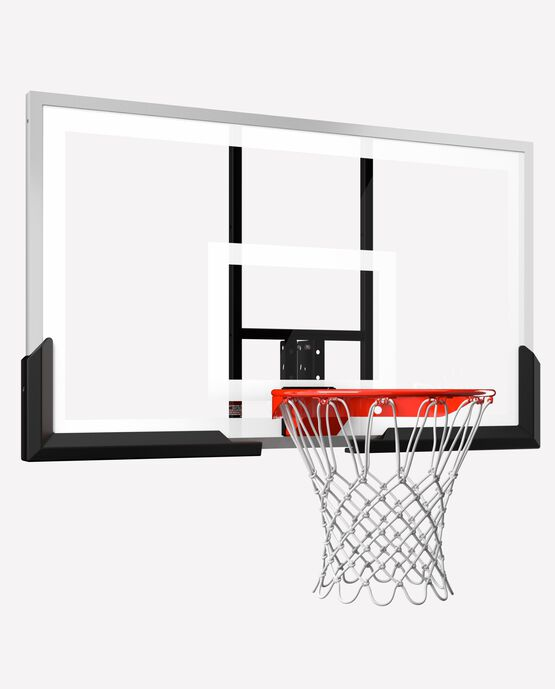
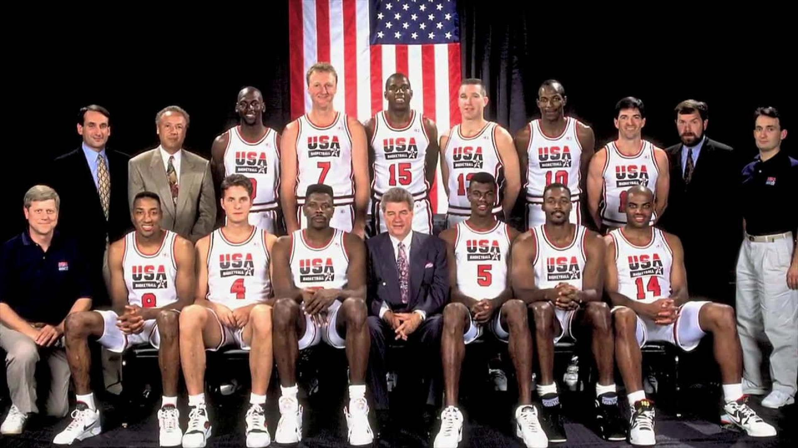
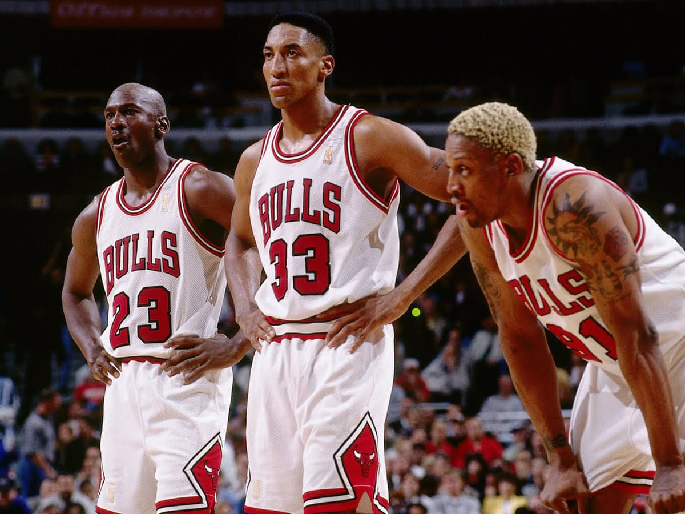
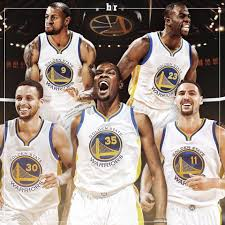

In 1891, James Naismith had a problem, he was a teacher, and his students were forced indoors as it was winter time, because of this they misbehaved. They had loads of energy but had no way to use it,they couldn’t play any sports because of the weather. Because of this the school asked him to create a new sport, he got the idea of a game where you throw a ball at a target, and the team that hit the target the most won. Naismith called his sport basketball, and wrote 13 basic rules.
The 13 original rules of Basketball are:
In the present day when we think of basketball, we think of the NBA, however it wasn’t always like this. The NBA has a totally different story on how it got created. The BAA incorporated in 1946. This challenged the nine year old Nbl. To compete with the Nbl the baa established itself into bigger cities than the nbl as the nbl only existed in smaller midwestern cities like Fort Wayne, Sheboygan, and Akron. “Another example would be that the nbl held its games in small gymnasiums whereas the baa played its games in large major market arenas such as the Boston Garden and New York City’s Madison Square Garden.” By 1948 the BAA had begun to attract some of the best players in the country. Because of this, four NBL franchises - Fort Wayne, Indianapolis, Minneapolis, and Rochester moved to the baa, bringing their best players with them. One example would be George Mikan, he was basically the Micheal Jordan of his era. The team he was on was practically guaranteed to win the championship. George Mikan ended up moving to the Minneapolis Lakers. On August 3, 1949, one representative from each league met up to finalize the merging of the leagues. The new NBA was made of 17 teams that represented both small towns and large cities all across the country. However this wasn’t happy ever after. Through the 1950’s the number of teams dwindled, along with fan support and by 1954, only 8 teams remained. Due to the league starting to fade the league invented a new 24 second shot clock. This made the game much more fast paced and more exciting for fans to watch. Because of this fans returned and the league finally established. Throughout the 1960’s and 70’s the NBA expanded and now millions of fans from all around the world watch the NBA. And that is the amazing story of how on June 6, 1946, New York, NY, the NBA was created.
The original game of basketball was amazing at that era, but it still needed a lot of improvement, for example one minor change was the ball, originally it was a soccer/basketball made of leather. But they became unsuitable for dribbling and ball handling. In the late 1890’s Spalding was the official basketball maker. However in 1905 the choice of basketballs was a choice for the team to decide. Since they couldn’t maintain shale and their laces, the early brown leather basketballs were hard to dribble. However later on they stopped stitching the ball and made it a bit bigger and easier to bounce. Currently the basketball is made of artificial synthetic leather.
Another thing would be baskets. Originally it was played with peach baskets or square boxes hung from balconies. One bad thing about peach baskets is that whenever someone scored, it slowed down the game as they had to take it down and retrieve the ball. Then the peach baskets were replaced with woven wire rims in 1892. A year later cast iron rims were used. Then in 1912 open ended nylon nets were in use. This was a major milestone, as now the ball fell down from the hoop itself which increased the tempo and speed of the game. They also introduced a 24 second clock later on in 1954, which increased the tempo and speed of the game even more. Continuing on with the hoop, the backboard also changed. Originally it was wire mesh backboards to prevent fans interrupting gameplay. Then wood replaced the wire as it didn’t dent as easily. “Backboards were mounted flat against walls, but in 1916 to prevent players running up the walls for easy lay-ups a two foot gap was introduced in-between the backboard and the endline.”
 Basketball has had many different iconic teams with many different players. Whether it is Wilt Chamberlain or Stephen Curry. Here are some of the most iconic teams of all time.
The Dream Team is known as the best team in basketball history. It was the USA 1992 basketball team who won gold. The roster of the Dream Team consists of Michael Jordan, Magic Johnson, Larry Bird, Charles Barkley, Karl Malone, John Stockton, Patrick Ewing, David Robinson, Clyde Drexler, Scottie Pippen, Chris Mullin, and Christian Laettner. They won gold with an average of a 60 point win.
The 1995-96 Bulls are one of the most iconic if not the most iconic team of all time. They are also known as the greatest team of all time. The roster was: Toni Kukoc, Luc Longley, Dennis Rodman, Michael Jordan, Scottie Pippen, Ron Harper, Steve Kerr. Jud Buechler, Jason Caffey, James Edwards, Bill Wennington, Dickey Simpkins, Jack Haley, and Randy Brown. This team won the championship. They had Micheal Jordan who is considered the greatest player of all time.
The 2016 - 17 warriors are one of the newer iconic teams. Their roster was: 22 Matt Barnes, Jose Anderson, Ian Clark, Stephen Curry, Keven Durant, Draymind Green, Andre Iguodala, Damion Jones, Shaun Livingston, Kevon Looney, James McAdoo, Patrick McCaw, JaVale McGee, Zara Pachulia, Klay Thompson, Anderson Varejao, Briante Weber, and David West.
